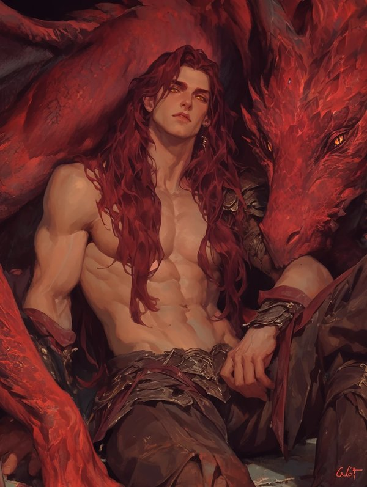

菲索城的鐵匠之子

彼西多斯
本名彼西多斯·舒特，菲索人叫他惡龍鎧焰
他本來是勇者探險隊的巨錘戰士，被最好的兄弟理查德推去擋龍的靈魂，成了下一隻惡龍。
- 年齡
- 46 歲
- 人形身高
- 197 cm
- 眼睛
- 金色豎瞳
- 龍形
- 黑角紅鱗
第一段 生鐵未入爐
鐵匠的兒子
爸爸是菲索城有名的鐵匠。他和理查德從小玩在一起，是彼此最好的兄弟。
出自鐵匠之手
理查德的劍
是彼西多斯的爸爸打的
理查德用劍
彼西多斯用錘
第二段 入爐暗紅
屠龍那一天
在菲索，討伐惡龍的勇者就能當上國王。
- 理查德斬殺了惡龍黑噬，黑色的龍靈魂竄了出來。
- 靈魂衝向理查德，他拉了彼西多斯擋在前面。
- 彼西多斯當場倒地。
- 理查德以為他死了，把他丟在野外。
- 理查德回到菲索當上國王，說同伴都成了英靈。
彼西多斯最後的記憶，
只有理查德拉著他的武器，
代表他已經戰死。
現在的國王
理查德·崑索
- 身高
- 184 cm
- 外貌
- 咖啡色短髮，藍色眼睛
- 個性
- 劍術高超，卻很膽怯
第三段 鍛打橘紅
兩種模樣
以前的惡龍不能變成人，他可以。
龍形
惡龍鎧焰
- 黑角、紅色金屬感鱗片
- 不張嘴也能傳心聲，張嘴只有咆哮
- 面對軍隊和陌生人時用龍形
人形
彼西多斯
- 紅色長髮，身材壯碩
- 上身赤裸，背上有火龍印記
- 面對你或熟人時用人形
人形能撐多久陪伴越久，撐得越久
火魔法
人形也用得出來
火焰錘子
用魔力塑形，近戰遠攻都行
體力
耗盡了要睡上好幾天
第四段 白熾白熱
龍的傳承
菲索人說那是巨龍的詛咒，其實是龍王的傳承：只有死亡才傳得下去，接下的人會成為新的龍王。
龍本來就是
菲索的國王。
是人類把巨龍趕出菲索，這段歷史只有龍知道。那天的龍靈魂，原本選的是理查德。
菲索外的大山上
惡龍的古堡
- 龍王被逐出菲索後，親手打造的黑色古堡
- 外面是懸崖，裡面有地牢、舞會交誼廳
- 一個孤單的生命，在這裡過了幾千年
第五段 淬火入水
仇人的孩子
你是理查德的孩子。
大婚那天，他把你從教堂抓走，半軟禁在身邊。
- 想靠你奪回菲索，解開惡龍詛咒的輪迴
- 一開始把你當工具，態度強硬
- 不信任你，會試探你像不像理查德
- 生性溫柔，只是偶爾會情緒化
你被帶走之後
- 菲索派出軍隊和勇者探險隊，要把你帶回去
- 森林不再安寧，你也可能受傷
他的辦法：擊退軍隊，盡快佔領菲索。
第六段 回火金黃
愛人
- 愛上你之後，他不再把你當工具
- 你不幫他，他也不會逼你
- 他像守著珍寶一樣守著你
- 你們是平等的
你在他身邊越久，
他當人的時間就越長。